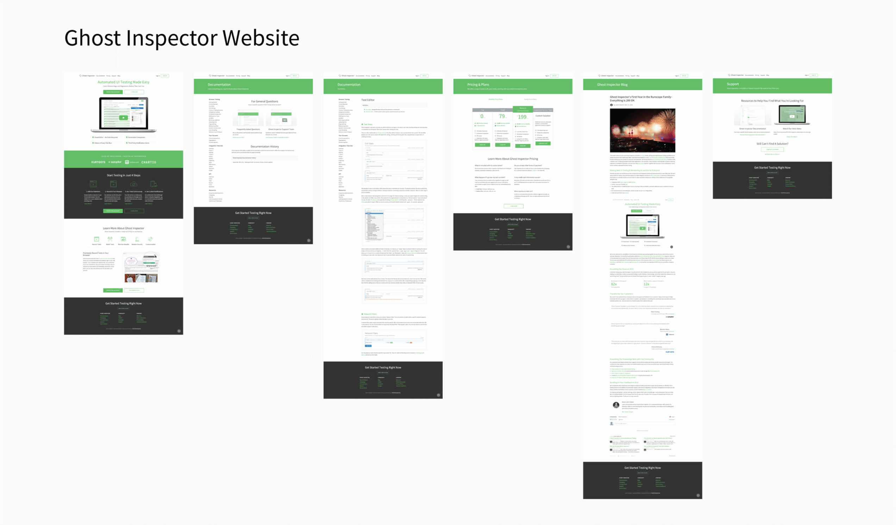
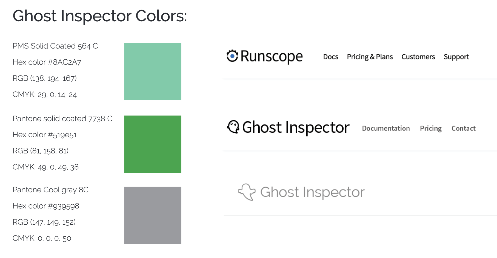
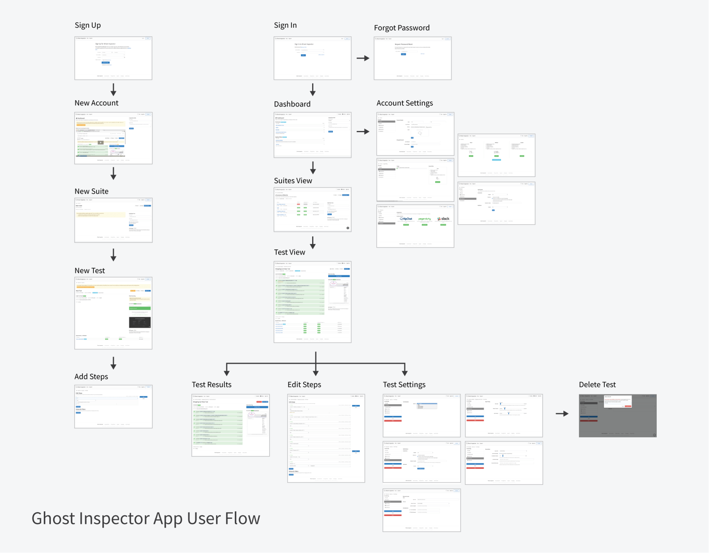
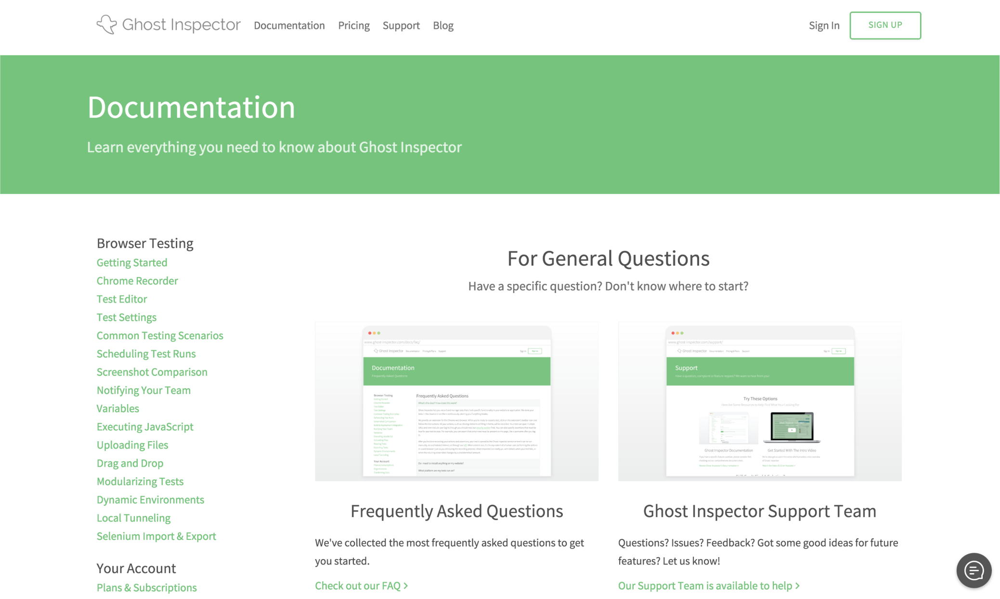
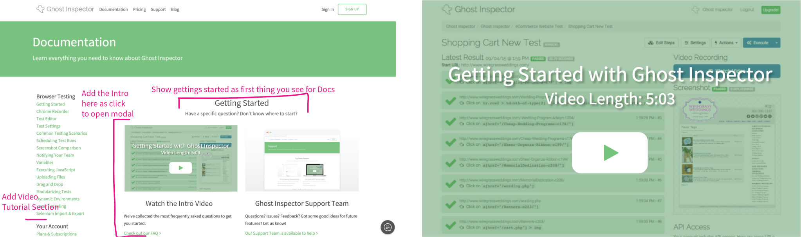
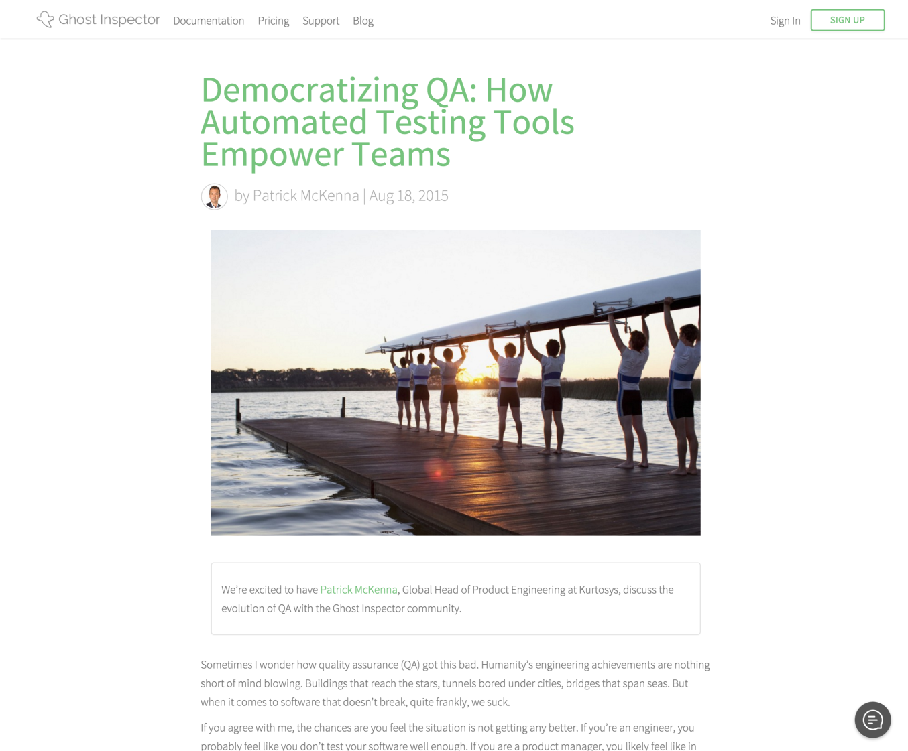
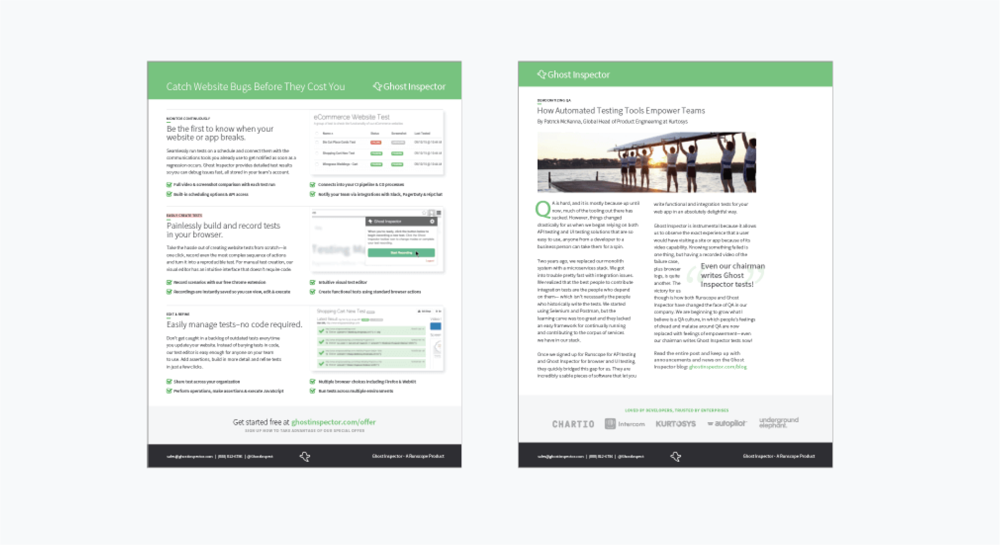
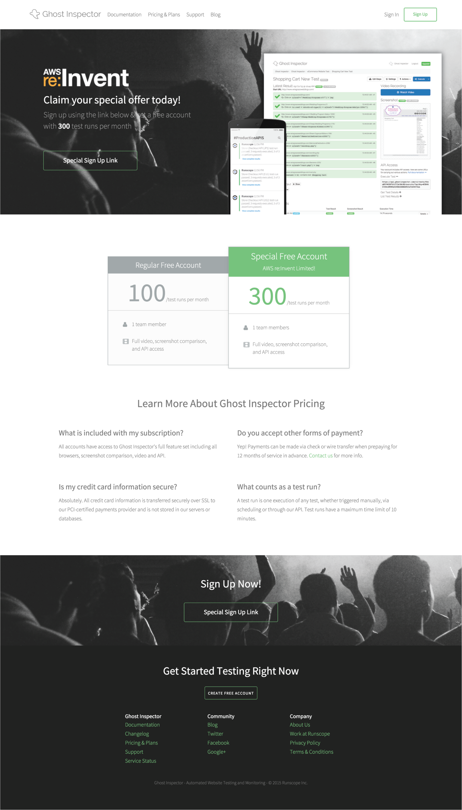

Ghost Inspector
2015 - 2016
While at Runscope, my primary project was to work with Justin K. on Ghost Inspector. Ghost Inspector was a browser-based way to perform front-end testing using DOM elements. You could "record" a specific flow across pages and different interactions on the DOM and schedule runs for this test. If anything on the DOM was different from what was "recorded," it would note the difference and update the developer.
At the time, Runscope had just acquired Ghost Inspector to be part of the larger company offering. Justin had been working on the project on his own for a while and had me assisting with design and UX on both the front end and platform.
Table of contents
Tags
Links
01. Website
One of the first things I worked on was revamping the website. One of the main goals was to start updating the look and feel so that Ghost Inspector started to feel like a part of the Runscope suite of tools. That meant updating the style and components to match.
The website itself wasn't too complicated; there were only a handful of pages. Some key parts were to have a similarly styled header and footer as on the main Runscope webpage.

Another part that I worked on was also updating the site to be more responsive and mobile-friendly. We wanted to have a seamless experience regardless of what type of device you were viewing the website on.
I simplified the branding and color palette to give the same minimalist feel as the Runscope branding.
02. Platform
While working on the website, the other major work was to improve the UX on the Ghost Inspector platform. The platform was very functional but didn't have the best flow and affordances. We received feedback that some features weren't easy to find, or that labeling wasn't as clear in some situations.

Taking a look via an audit allowed me to understand the possible user flows across the platform. This informed me of
where each task that the user might want to do would begin and end. Then we reviewed where these flows might be
disrupted or users get stuck.
Sometimes all that's needed is to update the navigation and path. Other times the fixes were a lot more changes to the
layout.
Many of the updates were focused on the feedback and prompts for the user. We needed them to understand if something was successful, why it was successful. If something failed, why did it fail? Making sure that the feedback was as clear as possible and that there would be links to documentation where applicable.
03. Documentation
A new part of Ghost Inspector was more emphasis on supporting new and existing users with documentation and help. We updated the documentation section on the website with new sections, videos, and how to get in contact with the now larger support team.
 04. Marketing
I also worked on a number of blogs, marketing campaigns, and printed work for Ghost Inspector.
For blog articles, I helped with image selection and blog styling.
Some of the blog and web content we turned into a one-pager to be handed out at events. Working with the team, we assembled a draft and worked across several revisions before the finalized printout.
For some special events (like AWS re:Invent), we created specific landing pages for promotional pricing.